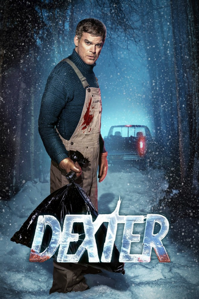
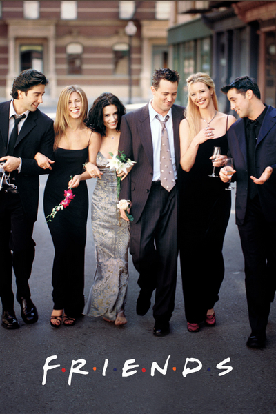
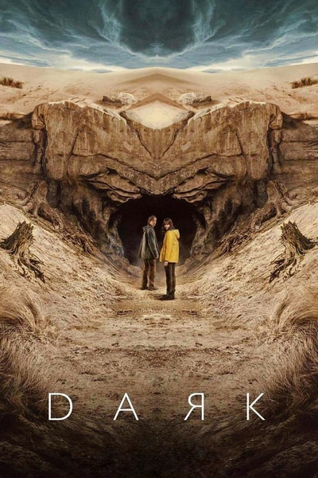

AS MAIS ESCOLHIDAS
Ranking de Séries
Quando você adiciona uma série para assistir, ela conquista um ponto no ranking.

NO RANKING
House of the Dragon
Drama · Fantasia
0pontos
02
NO RANKING
American Gods
Drama · Fantasia
0pontos
03
NO RANKING
The Big Bang Theory
Comédia · Sitcom
0pontos
04
NO RANKING
The Acolyte
Ficção científica · Mistério
0pontos
05NO RANKING
Silo
Drama · Ficção científica · Mistério
0pontos
06
NO RANKING
Stuart Fails to Save the Universe
Comédia · Ficção científica · Aventura
0pontos
07
NO RANKING
The Ark
Drama · Ficção científica
0pontos
08
NO RANKING
Dune: Prophecy
Drama · Ficção científica
0pontos
09
NO RANKING
Dexter
Drama · Crime · Suspense
0pontos
10
NO RANKING
The Walking Dead
Drama · Terror · Sobrevivência
0pontos
11
NO RANKING
The Sandman
Drama · Fantasia
0pontos
12
NO RANKING
The Witcher
Drama · Ação · Fantasia
0pontos
13
NO RANKING
Stranger Things
Drama · Terror · Ficção científica
0pontos
14
NO RANKING
Game of Thrones
Drama · Fantasia · Aventura
0pontos
15
NO RANKING
Breaking Bad
Drama · Crime · Suspense
0pontos
16
NO RANKING
Black Mirror
Drama · Ficção científica · Suspense
0pontos
17
NO RANKING
Friends
Comédia · Romance
0pontos
18
NO RANKING
The Last of Us
Drama · Ação · Terror
0pontos
19
NO RANKING
Dark
Drama · Ficção científica · Mistério
0pontos